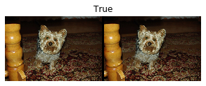
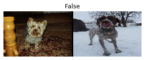
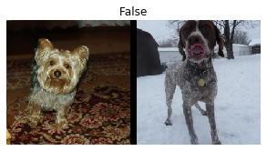
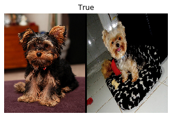

#hide
! [ -e /content ] && pip install -Uqq fastbook
import fastbook
fastbook.setup_book()Data Munging with fastai’s Mid-Level API
#hide
from fastbook import *
from IPython.display import display,HTML[[chapter_midlevel_data]]
We have seen what Tokenizer and Numericalize do to a collection of texts, and how they’re used inside the data block API, which handles those transforms for us directly using the TextBlock. But what if we want to only apply one of those transforms, either to see intermediate results or because we have already tokenized texts? More generally, what can we do when the data block API is not flexible enough to accommodate our particular use case? For this, we need to use fastai’s mid-level API for processing data. The data block API is built on top of that layer, so it will allow you to do everything the data block API does, and much much more.
Going Deeper into fastai’s Layered API
The fastai library is built on a layered API. In the very top layer there are applications that allow us to train a model in five lines of codes, as we saw in <DataLoaders for a text classifier, for instance, we used the line:
from fastai.text.all import *
dls = TextDataLoaders.from_folder(untar_data(URLs.IMDB), valid='test')The factory method TextDataLoaders.from_folder is very convenient when your data is arranged the exact same way as the IMDb dataset, but in practice, that often won’t be the case. The data block API offers more flexibility. As we saw in the last chapter, we can get the same result with:
path = untar_data(URLs.IMDB)
dls = DataBlock(
blocks=(TextBlock.from_folder(path),CategoryBlock),
get_y = parent_label,
get_items=partial(get_text_files, folders=['train', 'test']),
splitter=GrandparentSplitter(valid_name='test')
).dataloaders(path)But it’s sometimes not flexible enough. For debugging purposes, for instance, we might need to apply just parts of the transforms that come with this data block. Or we might want to create a DataLoaders for some application that isn’t directly supported by fastai. In this section, we’ll dig into the pieces that are used inside fastai to implement the data block API. Understanding these will enable you to leverage the power and flexibility of this mid-tier API.
note: Mid-Level API: The mid-level API does not only contain functionality for creating
DataLoaders. It also has the callback system, which allows us to customize the training loop any way we like, and the general optimizer. Both will be covered in <>.
Transforms
When we studied tokenization and numericalization in the last chapter, we started by grabbing a bunch of texts:
files = get_text_files(path, folders = ['train', 'test'])
txts = L(o.open().read() for o in files[:2000])We then showed how to tokenize them with a Tokenizer:
tok = Tokenizer.from_folder(path)
tok.setup(txts)
toks = txts.map(tok)
toks[0](#374) ['xxbos','xxmaj','well',',','"','cube','"','(','1997',')'...]and how to numericalize, including automatically creating the vocab for our corpus:
num = Numericalize()
num.setup(toks)
nums = toks.map(num)
nums[0][:10]tensor([ 2, 8, 76, 10, 23, 3112, 23, 34, 3113, 33])The classes also have a decode method. For instance, Numericalize.decode gives us back the string tokens:
nums_dec = num.decode(nums[0][:10]); nums_dec(#10) ['xxbos','xxmaj','well',',','"','cube','"','(','1997',')']and Tokenizer.decode turns this back into a single string (it may not, however, be exactly the same as the original string; this depends on whether the tokenizer is reversible, which the default word tokenizer is not at the time we’re writing this book):
tok.decode(nums_dec)'xxbos xxmaj well , " cube " ( 1997 )'decode is used by fastai’s show_batch and show_results, as well as some other inference methods, to convert predictions and mini-batches into a human-understandable representation.
For each of tok or num in the preceding example, we created an object, called the setup method (which trains the tokenizer if needed for tok and creates the vocab for num), applied it to our raw texts (by calling the object as a function), and then finally decoded the result back to an understandable representation. These steps are needed for most data preprocessing tasks, so fastai provides a class that encapsulates them. This is the Transform class. Both Tokenize and Numericalize are Transforms.
In general, a Transform is an object that behaves like a function and has an optional setup method that will initialize some inner state (like the vocab inside num) and an optional decode that will reverse the function (this reversal may not be perfect, as we saw with tok).
A good example of decode is found in the Normalize transform that we saw in <decode method undoes the normalization (i.e., it multiplies by the standard deviation and adds back the mean). On the other hand, data augmentation transforms do not have a decode method, since we want to show the effects on images to make sure the data augmentation is working as we want.
A special behavior of Transforms is that they always get applied over tuples. In general, our data is always a tuple (input,target) (sometimes with more than one input or more than one target). When applying a transform on an item like this, such as Resize, we don’t want to resize the tuple as a whole; instead, we want to resize the input (if applicable) and the target (if applicable) separately. It’s the same for batch transforms that do data augmentation: when the input is an image and the target is a segmentation mask, the transform needs to be applied (the same way) to the input and the target.
We can see this behavior if we pass a tuple of texts to tok:
tok((txts[0], txts[1]))((#374) ['xxbos','xxmaj','well',',','"','cube','"','(','1997',')'...],
(#207) ['xxbos','xxmaj','conrad','xxmaj','hall','went','out','with','a','bang'...])Writing Your Own Transform
If you want to write a custom transform to apply to your data, the easiest way is to write a function. As you can see in this example, a Transform will only be applied to a matching type, if a type is provided (otherwise it will always be applied). In the following code, the :int in the function signature means that f only gets applied to ints. That’s why tfm(2.0) returns 2.0, but tfm(2) returns 3 here:
def f(x:int): return x+1
tfm = Transform(f)
tfm(2),tfm(2.0)(3, 2.0)Here, f is converted to a Transform with no setup and no decode method.
Python has a special syntax for passing a function (like f) to another function (or something that behaves like a function, known as a callable in Python), called a decorator. A decorator is used by prepending a callable with @ and placing it before a function definition (there are lots of good online tutorials about Python decorators, so take a look at one if this is a new concept for you). The following is identical to the previous code:
@Transform
def f(x:int): return x+1
f(2),f(2.0)(3, 2.0)If you need either setup or decode, you will need to subclass Transform to implement the actual encoding behavior in encodes, then (optionally), the setup behavior in setups and the decoding behavior in decodes:
class NormalizeMean(Transform):
def setups(self, items): self.mean = sum(items)/len(items)
def encodes(self, x): return x-self.mean
def decodes(self, x): return x+self.meanHere, NormalizeMean will initialize some state during the setup (the mean of all elements passed), then the transformation is to subtract that mean. For decoding purposes, we implement the reverse of that transformation by adding the mean. Here is an example of NormalizeMean in action:
tfm = NormalizeMean()
tfm.setup([1,2,3,4,5])
start = 2
y = tfm(start)
z = tfm.decode(y)
tfm.mean,y,z(3.0, -1.0, 2.0)Note that the method called and the method implemented are different, for each of these methods:
[options="header"]
|======
| Class | To call | To implement
| `nn.Module` (PyTorch) | `()` (i.e., call as function) | `forward`
| `Transform` | `()` | `encodes`
| `Transform` | `decode()` | `decodes`
| `Transform` | `setup()` | `setups`
|======So, for instance, you would never call setups directly, but instead would call setup. The reason for this is that setup does some work before and after calling setups for you. To learn more about Transforms and how you can use them to implement different behavior depending on the type of the input, be sure to check the tutorials in the fastai docs.
Pipeline
To compose several transforms together, fastai provides the Pipeline class. We define a Pipeline by passing it a list of Transforms; it will then compose the transforms inside it. When you call Pipeline on an object, it will automatically call the transforms inside, in order:
tfms = Pipeline([tok, num])
t = tfms(txts[0]); t[:20]tensor([ 2, 8, 76, 10, 23, 3112, 23, 34, 3113, 33, 10, 8, 4477, 22, 88, 32, 10, 27, 42, 14])And you can call decode on the result of your encoding, to get back something you can display and analyze:
tfms.decode(t)[:100]'xxbos xxmaj well , " cube " ( 1997 ) , xxmaj vincenzo \'s first movie , was one of the most interesti'The only part that doesn’t work the same way as in Transform is the setup. To properly set up a Pipeline of Transforms on some data, you need to use a TfmdLists.
TfmdLists and Datasets: Transformed Collections
Your data is usually a set of raw items (like filenames, or rows in a DataFrame) to which you want to apply a succession of transformations. We just saw that a succession of transformations is represented by a Pipeline in fastai. The class that groups together this Pipeline with your raw items is called TfmdLists.
TfmdLists
Here is the short way of doing the transformation we saw in the previous section:
tls = TfmdLists(files, [Tokenizer.from_folder(path), Numericalize])At initialization, the TfmdLists will automatically call the setup method of each Transform in order, providing them not with the raw items but the items transformed by all the previous Transforms in order. We can get the result of our Pipeline on any raw element just by indexing into the TfmdLists:
t = tls[0]; t[:20]tensor([ 2, 8, 91, 11, 22, 5793, 22, 37, 4910, 34, 11, 8, 13042, 23, 107, 30, 11, 25, 44, 14])And the TfmdLists knows how to decode for show purposes:
tls.decode(t)[:100]'xxbos xxmaj well , " cube " ( 1997 ) , xxmaj vincenzo \'s first movie , was one of the most interesti'In fact, it even has a show method:
tls.show(t)xxbos xxmaj well , " cube " ( 1997 ) , xxmaj vincenzo 's first movie , was one of the most interesting and tricky ideas that xxmaj i 've ever seen when talking about movies . xxmaj they had just one scenery , a bunch of actors and a plot . xxmaj so , what made it so special were all the effective direction , great dialogs and a bizarre condition that characters had to deal like rats in a labyrinth . xxmaj his second movie , " cypher " ( 2002 ) , was all about its story , but it was n't so good as " cube " but here are the characters being tested like rats again .
" nothing " is something very interesting and gets xxmaj vincenzo coming back to his ' cube days ' , locking the characters once again in a very different space with no time once more playing with the characters like playing with rats in an experience room . xxmaj but instead of a thriller sci - fi ( even some of the promotional teasers and trailers erroneous seemed like that ) , " nothing " is a loose and light comedy that for sure can be called a modern satire about our society and also about the intolerant world we 're living . xxmaj once again xxmaj xxunk amaze us with a great idea into a so small kind of thing . 2 actors and a blinding white scenario , that 's all you got most part of time and you do n't need more than that . xxmaj while " cube " is a claustrophobic experience and " cypher " confusing , " nothing " is completely the opposite but at the same time also desperate .
xxmaj this movie proves once again that a smart idea means much more than just a millionaire budget . xxmaj of course that the movie fails sometimes , but its prime idea means a lot and offsets any flaws . xxmaj there 's nothing more to be said about this movie because everything is a brilliant surprise and a totally different experience that i had in movies since " cube " .The TfmdLists is named with an “s” because it can handle a training and a validation set with a splits argument. You just need to pass the indices of which elements are in the training set, and which are in the validation set:
cut = int(len(files)*0.8)
splits = [list(range(cut)), list(range(cut,len(files)))]
tls = TfmdLists(files, [Tokenizer.from_folder(path), Numericalize],
splits=splits)You can then access them through the train and valid attributes:
tls.valid[0][:20]tensor([ 2, 8, 20, 30, 87, 510, 1570, 12, 408, 379, 4196, 10, 8, 20, 30, 16, 13, 12216, 202, 509])If you have manually written a Transform that performs all of your preprocessing at once, turning raw items into a tuple with inputs and targets, then TfmdLists is the class you need. You can directly convert it to a DataLoaders object with the dataloaders method. This is what we will do in our Siamese example later in this chapter.
In general, though, you will have two (or more) parallel pipelines of transforms: one for processing your raw items into inputs and one to process your raw items into targets. For instance, here, the pipeline we defined only processes the raw text into inputs. If we want to do text classification, we also have to process the labels into targets.
For this we need to do two things. First we take the label name from the parent folder. There is a function, parent_label, for this:
lbls = files.map(parent_label)
lbls(#50000) ['pos','pos','pos','pos','pos','pos','pos','pos','pos','pos'...]Then we need a Transform that will grab the unique items and build a vocab with them during setup, then transform the string labels into integers when called. fastai provides this for us; it’s called Categorize:
cat = Categorize()
cat.setup(lbls)
cat.vocab, cat(lbls[0])((#2) ['neg','pos'], TensorCategory(1))To do the whole setup automatically on our list of files, we can create a TfmdLists as before:
tls_y = TfmdLists(files, [parent_label, Categorize()])
tls_y[0]TensorCategory(1)But then we end up with two separate objects for our inputs and targets, which is not what we want. This is where Datasets comes to the rescue.
Datasets
Datasets will apply two (or more) pipelines in parallel to the same raw object and build a tuple with the result. Like TfmdLists, it will automatically do the setup for us, and when we index into a Datasets, it will return us a tuple with the results of each pipeline:
x_tfms = [Tokenizer.from_folder(path), Numericalize]
y_tfms = [parent_label, Categorize()]
dsets = Datasets(files, [x_tfms, y_tfms])
x,y = dsets[0]
x[:20],yLike a TfmdLists, we can pass along splits to a Datasets to split our data between training and validation sets:
x_tfms = [Tokenizer.from_folder(path), Numericalize]
y_tfms = [parent_label, Categorize()]
dsets = Datasets(files, [x_tfms, y_tfms], splits=splits)
x,y = dsets.valid[0]
x[:20],y(tensor([ 2, 8, 20, 30, 87, 510, 1570, 12, 408, 379, 4196, 10, 8, 20, 30, 16, 13, 12216, 202, 509]),
TensorCategory(0))It can also decode any processed tuple or show it directly:
t = dsets.valid[0]
dsets.decode(t)('xxbos xxmaj this movie had horrible lighting and terrible camera movements . xxmaj this movie is a jumpy horror flick with no meaning at all . xxmaj the slashes are totally fake looking . xxmaj it looks like some 17 year - old idiot wrote this movie and a 10 year old kid shot it . xxmaj with the worst acting you can ever find . xxmaj people are tired of knives . xxmaj at least move on to guns or fire . xxmaj it has almost exact lines from " when a xxmaj stranger xxmaj calls " . xxmaj with gruesome killings , only crazy people would enjoy this movie . xxmaj it is obvious the writer does n\'t have kids or even care for them . i mean at show some mercy . xxmaj just to sum it up , this movie is a " b " movie and it sucked . xxmaj just for your own sake , do n\'t even think about wasting your time watching this crappy movie .',
'neg')The last step is to convert our Datasets object to a DataLoaders, which can be done with the dataloaders method. Here we need to pass along a special argument to take care of the padding problem (as we saw in the last chapter). This needs to happen just before we batch the elements, so we pass it to before_batch:
dls = dsets.dataloaders(bs=64, before_batch=pad_input)dataloaders directly calls DataLoader on each subset of our Datasets. fastai’s DataLoader expands the PyTorch class of the same name and is responsible for collating the items from our datasets into batches. It has a lot of points of customization, but the most important ones that you should know are:
after_item:: Applied on each item after grabbing it inside the dataset. This is the equivalent ofitem_tfmsinDataBlock.before_batch:: Applied on the list of items before they are collated. This is the ideal place to pad items to the same size.after_batch:: Applied on the batch as a whole after its construction. This is the equivalent ofbatch_tfmsinDataBlock.
As a conclusion, here is the full code necessary to prepare the data for text classification:
tfms = [[Tokenizer.from_folder(path), Numericalize], [parent_label, Categorize]]
files = get_text_files(path, folders = ['train', 'test'])
splits = GrandparentSplitter(valid_name='test')(files)
dsets = Datasets(files, tfms, splits=splits)
dls = dsets.dataloaders(dl_type=SortedDL, before_batch=pad_input)The two differences from the previous code are the use of GrandparentSplitter to split our training and validation data, and the dl_type argument. This is to tell dataloaders to use the SortedDL class of DataLoader, and not the usual one. SortedDL constructs batches by putting samples of roughly the same lengths into batches.
This does the exact same thing as our previous DataBlock:
path = untar_data(URLs.IMDB)
dls = DataBlock(
blocks=(TextBlock.from_folder(path),CategoryBlock),
get_y = parent_label,
get_items=partial(get_text_files, folders=['train', 'test']),
splitter=GrandparentSplitter(valid_name='test')
).dataloaders(path)But now, you know how to customize every single piece of it!
Let’s practice what we just learned about this mid-level API for data preprocessing, using a computer vision example now.
Applying the Mid-Level Data API: SiamesePair
A Siamese model takes two images and has to determine if they are of the same class or not. For this example, we will use the Pet dataset again and prepare the data for a model that will have to predict if two images of pets are of the same breed or not. We will explain here how to prepare the data for such a model, then we will train that model in <
First things first, let’s get the images in our dataset:
from fastai.vision.all import *
path = untar_data(URLs.PETS)
files = get_image_files(path/"images")If we didn’t care about showing our objects at all, we could directly create one transform to completely preprocess that list of files. We will want to look at those images though, so we need to create a custom type. When you call the show method on a TfmdLists or a Datasets object, it will decode items until it reaches a type that contains a show method and use it to show the object. That show method gets passed a ctx, which could be a matplotlib axis for images, or a row of a DataFrame for texts.
Here we create a SiameseImage object that subclasses fastuple and is intended to contain three things: two images, and a Boolean that’s True if the images are of the same breed. We also implement the special show method, such that it concatenates the two images with a black line in the middle. Don’t worry too much about the part that is in the if test (which is to show the SiameseImage when the images are Python images, not tensors); the important part is in the last three lines:
class SiameseImage(fastuple):
def show(self, ctx=None, **kwargs):
img1,img2,same_breed = self
if not isinstance(img1, Tensor):
if img2.size != img1.size: img2 = img2.resize(img1.size)
t1,t2 = tensor(img1),tensor(img2)
t1,t2 = t1.permute(2,0,1),t2.permute(2,0,1)
else: t1,t2 = img1,img2
line = t1.new_zeros(t1.shape[0], t1.shape[1], 10)
return show_image(torch.cat([t1,line,t2], dim=2),
title=same_breed, ctx=ctx)Let’s create a first SiameseImage and check our show method works:
img = PILImage.create(files[0])
s = SiameseImage(img, img, True)
s.show();
We can also try with a second image that’s not from the same class:
img1 = PILImage.create(files[1])
s1 = SiameseImage(img, img1, False)
s1.show();
The important thing with transforms that we saw before is that they dispatch over tuples or their subclasses. That’s precisely why we chose to subclass fastuple in this instance—this way we can apply any transform that works on images to our SiameseImage and it will be applied on each image in the tuple:
s2 = Resize(224)(s1)
s2.show();
Here the Resize transform is applied to each of the two images, but not the Boolean flag. Even if we have a custom type, we can thus benefit from all the data augmentation transforms inside the library.
We are now ready to build the Transform that we will use to get our data ready for a Siamese model. First, we will need a function to determine the classes of all our images:
def label_func(fname):
return re.match(r'^(.*)_\d+.jpg$', fname.name).groups()[0]For each image our tranform will, with a probability of 0.5, draw an image from the same class and return a SiameseImage with a true label, or draw an image from another class and return a SiameseImage with a false label. This is all done in the private _draw function. There is one difference between the training and validation sets, which is why the transform needs to be initialized with the splits: on the training set we will make that random pick each time we read an image, whereas on the validation set we make this random pick once and for all at initialization. This way, we get more varied samples during training, but always the same validation set:
class SiameseTransform(Transform):
def __init__(self, files, label_func, splits):
self.labels = files.map(label_func).unique()
self.lbl2files = {l: L(f for f in files if label_func(f) == l)
for l in self.labels}
self.label_func = label_func
self.valid = {f: self._draw(f) for f in files[splits[1]]}
def encodes(self, f):
f2,t = self.valid.get(f, self._draw(f))
img1,img2 = PILImage.create(f),PILImage.create(f2)
return SiameseImage(img1, img2, t)
def _draw(self, f):
same = random.random() < 0.5
cls = self.label_func(f)
if not same:
cls = random.choice(L(l for l in self.labels if l != cls))
return random.choice(self.lbl2files[cls]),sameWe can then create our main transform:
splits = RandomSplitter()(files)
tfm = SiameseTransform(files, label_func, splits)
tfm(files[0]).show();
In the mid-level API for data collection we have two objects that can help us apply transforms on a set of items, TfmdLists and Datasets. If you remember what we have just seen, one applies a Pipeline of transforms and the other applies several Pipelines of transforms in parallel, to build tuples. Here, our main transform already builds the tuples, so we use TfmdLists:
tls = TfmdLists(files, tfm, splits=splits)
show_at(tls.valid, 0);
And we can finally get our data in DataLoaders by calling the dataloaders method. One thing to be careful of here is that this method does not take item_tfms and batch_tfms like a DataBlock. The fastai DataLoader has several hooks that are named after events; here what we apply on the items after they are grabbed is called after_item, and what we apply on the batch once it’s built is called after_batch:
dls = tls.dataloaders(after_item=[Resize(224), ToTensor],
after_batch=[IntToFloatTensor, Normalize.from_stats(*imagenet_stats)])Note that we need to pass more transforms than usual—that’s because the data block API usually adds them automatically:
ToTensoris the one that converts images to tensors (again, it’s applied on every part of the tuple).IntToFloatTensorconverts the tensor of images containing integers from 0 to 255 to a tensor of floats, and divides by 255 to make the values between 0 and 1.
We can now train a model using this DataLoaders. It will need a bit more customization than the usual model provided by vision_learner since it has to take two images instead of one, but we will see how to create such a model and train it in <
Conclusion
fastai provides a layered API. It takes one line of code to grab the data when it’s in one of the usual settings, making it easy for beginners to focus on training a model without spending too much time assembling the data. Then, the high-level data block API gives you more flexibility by allowing you to mix and match some building blocks. Underneath it, the mid-level API gives you greater flexibility to apply any transformations on your items. In your real-world problems, this is probably what you will need to use, and we hope it makes the step of data-munging as easy as possible.
Questionnaire
- Why do we say that fastai has a “layered” API? What does it mean?
- Why does a
Transformhave adecodemethod? What does it do? - Why does a
Transformhave asetupmethod? What does it do? - How does a
Transformwork when called on a tuple? - Which methods do you need to implement when writing your own
Transform? - Write a
Normalizetransform that fully normalizes items (subtract the mean and divide by the standard deviation of the dataset), and that can decode that behavior. Try not to peek! - Write a
Transformthat does the numericalization of tokenized texts (it should set its vocab automatically from the dataset seen and have adecodemethod). Look at the source code of fastai if you need help. - What is a
Pipeline? - What is a
TfmdLists? - What is a
Datasets? How is it different from aTfmdLists? - Why are
TfmdListsandDatasetsnamed with an “s”? - How can you build a
DataLoadersfrom aTfmdListsor aDatasets? - How do you pass
item_tfmsandbatch_tfmswhen building aDataLoadersfrom aTfmdListsor aDatasets? - What do you need to do when you want to have your custom items work with methods like
show_batchorshow_results? - Why can we easily apply fastai data augmentation transforms to the
SiamesePairwe built?
Further Research
- Use the mid-level API to prepare the data in
DataLoaderson your own datasets. Try this with the Pet dataset and the Adult dataset from Chapter 1. - Look at the Siamese tutorial in the fastai documentation to learn how to customize the behavior of
show_batchandshow_resultsfor new type of items. Implement it in your own project.
Understanding fastai’s Applications: Wrap Up
Congratulations—you’ve completed all of the chapters in this book that cover the key practical parts of training models and using deep learning! You know how to use all of fastai’s built-in applications, and how to customize them using the data block API and loss functions. You even know how to create a neural network from scratch, and train it! (And hopefully you now know some of the questions to ask to make sure your creations help improve society too.)
The knowledge you already have is enough to create full working prototypes of many types of neural network applications. More importantly, it will help you understand the capabilities and limitations of deep learning models, and how to design a system that’s well adapted to them.
In the rest of this book we will be pulling apart those applications, piece by piece, to understand the foundations they are built on. This is important knowledge for a deep learning practitioner, because it is what allows you to inspect and debug models that you build and create new applications that are customized for your particular projects.